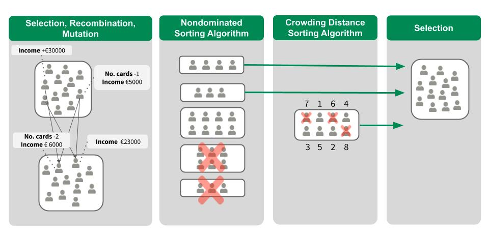

En cours de traduction.
9.3 - Explications contrefactuelles
Auteurs : Susanne Dandl et Christoph Molnar
Une explication contrefactuelle décrit une situation causale sous la forme : « Si X ne s’était pas produit, Y ne se serait pas produit ». Par exemple : « Si je n’avais pas bu une gorgée de ce café chaud, je ne me serais pas brûlé la langue ». L’événement Y est que je me suis brûlé la langue ; parce que X, c’est que j’ai pris un café chaud. Penser de manière contrefactuelle nécessite d’imaginer une réalité hypothétique qui contredit les faits observés (par exemple, un monde dans lequel je n’ai pas bu de café chaud), d’où le nom de « contrefactuel ». La capacité de penser de manière contrefactuelle nous rend, les humains, si intelligents par rapport aux autres animaux.
Dans l’apprentissage automatique interprétable, des explications contrefactuelles peuvent être utilisées pour expliquer les prédictions d’instances individuelles. L’« événement » est le résultat prédit d’une instance, les « causes » sont les valeurs de caractéristiques particulières de cette instance qui ont été entrées dans le modèle et « ont provoqué » une certaine prédiction. Affichée sous forme de graphique, la relation entre les entrées et la prédiction est très simple : les valeurs des caractéristiques provoquent la prédiction.

Même si en réalité la relation entre les entrées et le résultat à prédire n’est pas causale, nous pouvons considérer les entrées d’un modèle comme la cause de la prédiction.
Compte tenu de ce graphique simple, il est facile de voir comment nous pouvons simuler des contrefactuels pour les prédictions des modèles d’apprentissage automatique : nous modifions simplement les valeurs des caractéristiques d’une instance avant de faire les prédictions et nous analysons comment la prédiction change. Nous nous intéressons aux scénarios dans lesquels la prédiction change de manière pertinente, comme un changement de classe prédite (par exemple, demande de crédit acceptée ou rejetée), ou dans lesquels la prédiction atteint un certain seuil (par exemple, la probabilité de cancer atteint \(10%\)). Une explication contrefactuelle d’une prédiction décrit le plus petit changement apporté aux valeurs des caractéristiques qui transforme la prédiction en une sortie prédéfinie.
Il existe des méthodes d’explication contrefactuelles indépendantes du modèle et spécifiques au modèle, mais dans ce chapitre, nous nous concentrons sur les méthodes indépendantes du modèle qui fonctionnent uniquement avec les entrées et les sorties du modèle (et non avec la structure interne de modèles spécifiques). Ces méthodes trouveraient également leur place dans le chapitre indépendant du modèle, puisque l’interprétation peut être exprimée comme un résumé des différences dans les valeurs des caractéristiques (« modifier les caractéristiques A et B pour modifier la prédiction »). Mais une explication contrefactuelle est elle-même une nouvelle instance, elle figure donc dans ce chapitre (« en partant de l’instance X, changez A et B pour obtenir une instance contrefactuelle »). Contrairement aux prototypes, les contrefactuels ne doivent pas nécessairement être des instances réelles issues des données d’entraînement, mais peuvent être une nouvelle combinaison de valeurs de caractéristiques.
Avant d’expliquer comment créer des contrefactuels, j’aimerais discuter de quelques cas d’utilisation des contrefactuels et de ce à quoi ressemble une bonne explication contrefactuelle.
Dans ce premier exemple, Peter demande un prêt et est rejeté par le logiciel bancaire (propulsé par l’apprentissage automatique). Il se demande pourquoi sa demande a été rejetée et comment il pourrait améliorer ses chances d’obtenir un prêt. La question du « pourquoi » peut être formulée de manière contrefactuelle : quel est le plus petit changement dans les caractéristiques (revenu, nombre de cartes de crédit, âge, …) qui ferait passer la prédiction de rejetée à approuvée ? Une réponse possible pourrait être : si Pierre gagnait 10 000 de plus par an, il obtiendrait le prêt. Ou si Peter avait moins de cartes de crédit et n’avait pas fait défaut sur un prêt il y a cinq ans, il obtiendrait le prêt. Peter ne connaîtra jamais les raisons du refus, car la banque n’a aucun intérêt à la transparence, mais c’est une autre histoire.
Dans notre deuxième exemple, nous souhaitons expliquer un modèle qui prédit un résultat continu avec des explications contrefactuelles. Anna souhaite louer son appartement, mais elle ne sait pas exactement combien facturer. Elle décide donc de former un modèle d’apprentissage automatique pour prédire le loyer. Bien sûr, comme Anna est une data scientist, c’est ainsi qu’elle résout ses problèmes. Après avoir entré tous les détails concernant la taille, l’emplacement, si les animaux sont autorisés, etc., le mannequin lui dit qu’elle peut facturer 900 EUR. Elle s’attendait à 1 000 EUR ou plus, mais elle fait confiance à son modèle et décide de jouer avec les valeurs caractéristiques de l’appartement pour voir comment elle peut améliorer la valeur de l’appartement. Elle découvre que l’appartement pourrait être loué pour plus de 1 000 euros s’il était plus grand de \(15 m^2\). Une connaissance intéressante, mais non exploitable, car elle ne peut pas agrandir son appartement. Enfin, en modifiant uniquement les valeurs des caractéristiques sous son contrôle (cuisine intégrée oui/non, animaux admis oui/non, type de sol, etc.), elle découvre que si elle autorise les animaux et installe des fenêtres avec une meilleure isolation, elle peut facturer 1000 EUR. Anna a intuitivement travaillé avec des hypothèses contrefactuelles pour changer le résultat.
Les contrefactuels sont des explications conviviales, car ils contrastent avec l’instance actuelle et parce qu’ils sont sélectifs, ce qui signifie qu’ils se concentrent généralement sur un petit nombre de changements de fonctionnalités. Mais les contrefactuels souffrent de « l’effet Rashomon ». Rashomon est un film japonais dans lequel le meurtre d’un samouraï est raconté par différentes personnes. Chacune des histoires explique également bien le résultat, mais les histoires se contredisent. La même chose peut également se produire avec les hypothèses contrefactuelles, car il existe généralement plusieurs explications contrefactuelles différentes. Chaque contrefactuel raconte une « histoire » différente sur la façon dont un certain résultat a été atteint. Un contrefactuel pourrait dire de changer la caractéristique A, l’autre contrefactuel pourrait dire de laisser A inchangé mais de changer la caractéristique B, ce qui est une contradiction. Cette question des vérités multiples peut être résolue soit en rapportant toutes les explications contrefactuelles, soit en ayant un critère pour évaluer les contrefactuelles et sélectionner la meilleure.
En parlant de critères, comment définir une bonne explication contrefactuelle ? Premièrement, l’utilisateur d’une explication contrefactuelle définit un changement pertinent dans la prédiction d’une instance (= la réalité alternative). Une première exigence évidente est qu’une instance contrefactuelle produise la prédiction prédéfinie aussi fidèlement que possible. Il n’est pas toujours possible de trouver un contrefactuel avec la prédiction prédéfinie. Par exemple, dans un paramètre de classification comportant deux classes, une classe rare et une classe fréquente, le modèle peut toujours classer une instance comme classe fréquente. Changer les valeurs des caractéristiques afin que l’étiquette prédite passe de la classe fréquente à la classe rare peut être impossible. Nous souhaitons donc assouplir l’exigence selon laquelle la prédiction du contrefactuel doit correspondre exactement au résultat prédéfini. Dans l’exemple de classification, nous pourrions rechercher un contrefactuel dans lequel la probabilité prédite de la classe rare est augmentée à \(10%\) au lieu des \(2%\) actuels. La question est alors de savoir quels sont les changements minimaux dans les caractéristiques pour que la probabilité prédite passe de \(2%\) à \(10%\) (ou près de \(10%\)) ?
Un autre critère de qualité est qu’un contrefactuel doit être aussi similaire que possible à l’instance en ce qui concerne les valeurs des caractéristiques. La distance entre deux instances peut être mesurée, par exemple, avec la distance de Manhattan ou la distance de Gower si nous avons à la fois des caractéristiques discrètes et continues. Le contrefactuel ne doit pas seulement être proche de l’instance d’origine, mais doit également modifier le moins de caractéristiques possible. Pour mesurer la qualité d’une explication contrefactuelle dans cette métrique, nous pouvons simplement compter le nombre de caractéristiques modifiées ou, en termes mathématiques sophistiqués, mesurer la \(L_0\) norme entre instance contrefactuelle et instance réelle.
Troisièmement, il est souvent souhaitable de générer de multiples explications contrefactuelles afin que le sujet de la décision ait accès à de multiples façons viables de générer un résultat différent. Par exemple, en poursuivant notre exemple de prêt, une explication contrefactuelle pourrait suggérer de doubler simplement le revenu pour obtenir un prêt, tandis qu’une autre explication contrefactuelle pourrait suggérer de déménager dans une ville voisine et d’augmenter légèrement le revenu pour obtenir un prêt. Il convient de noter que même si le premier scénario contrefactuel pourrait être possible pour certains, le second pourrait être plus exploitable pour d’autres. Ainsi, en plus de fournir au sujet de la décision différentes manières d’obtenir le résultat souhaité, la diversité permet également à des individus « divers » de modifier les caractéristiques qui leur conviennent.
La dernière exigence est qu’une instance contrefactuelle doit avoir des valeurs de caractéristiques probables. Cela n’aurait pas de sens de générer une explication contrefactuelle pour l’exemple du loyer où la taille d’un appartement est négative ou le nombre de pièces est fixé à 200. C’est encore mieux lorsque le contrefactuel est probable selon la distribution conjointe des données, par exemple, un appartement de 10 pièces et \(20 m^2\) ne doit pas être considéré comme une explication contrefactuelle. Idéalement, si le nombre de mètres carrés augmente, il faudrait également proposer une augmentation du nombre de pièces.
9.3.1 - Générer des explications contrefactuelles
Une approche simple et naïve pour générer des explications contrefactuelles consiste à rechercher par essais et erreurs. Cette approche implique de modifier de manière aléatoire les valeurs des caractéristiques de l’instance d’intérêt et de s’arrêter lorsque le résultat souhaité est prédit. Comme l’exemple où Anna a essayé de trouver une version de son appartement pour laquelle elle pourrait facturer un loyer plus élevé. Mais il existe de meilleures approches que les essais et erreurs. Tout d’abord, nous définissons une fonction de perte basée sur les critères mentionnés ci-dessus. Cette perte prend en entrée l’instance d’intérêt, un contrefactuel et le résultat (contrefactuel) souhaité. Ensuite, nous pouvons trouver l’explication contrefactuelle qui minimise cette perte à l’aide d’un algorithme d’optimisation. De nombreuses méthodes procèdent de cette manière, mais diffèrent par leur définition de la fonction de perte et leur méthode d’optimisation.
Dans ce qui suit, nous nous concentrons sur deux d’entre eux : d’abord celui de Wachter et al. (2017)1, qui ont introduit l’explication contrefactuelle comme méthode d’interprétation et, deuxièmement, celle de Dandl et al. (2020)2 qui prend en compte les quatre critères mentionnés ci-dessus.
9.3.1.1 - Méthode de Wachter et al.
Wachter et coll. suggèrent de minimiser la perte suivante :
\[L(x,x^\prime,y^\prime,\lambda)=\lambda\cdot(\hat{f}(x^\prime)-y^\prime)^2+d(x,x^\prime)\]
Le premier terme est la distance quadratique entre la prédiction du modèle pour le contrefactuel \(x^\prime\) et le résultat souhaité \(y^\prime\), que l’utilisateur doit définir à l’avance. Le deuxième terme est la distance d entre l’instance \(x\) à expliquer et le contrefactuel \(x^\prime\). La perte mesure la distance entre le résultat prédit du contrefactuel et le résultat prédéfini et la distance entre le contrefactuel et l’instance d’intérêt. La fonction de distance d est définie comme la distance de Manhattan pondérée par l’écart médian absolu inverse (MAD) de chaque entité.
\[d(x,x^\prime)=\sum_{j=1}^p\frac{|x_j-x^\prime_j|}{MAD_j}\]
La distance totale est la somme de toutes les p distances selon les caractéristiques, c’est-à-dire les différences absolues des valeurs des caractéristiques entre l’instance x et le contrefactuel x’. Les distances par entité sont mises à l’échelle par l’inverse de l’écart absolu médian de l’entité j sur l’ensemble de données défini comme :
\[MAD_j=\text{median}_{i\in{}\{1,\ldots,n\}}(|x_{i,j}-\text{median}_{l\in{}\{1,\ldots,n\}}(x_{l,j})|)\]
La médiane d’un vecteur est la valeur à laquelle la moitié des valeurs du vecteur sont supérieures et l’autre moitié inférieure. Le MAD est l’équivalent de la variance d’une entité, mais au lieu d’utiliser la moyenne comme centre et de faire la somme sur les distances carrées, nous utilisons la médiane comme centre et de faire la somme sur les distances absolues. La fonction de distance proposée présente l’avantage par rapport à la distance euclidienne d’ être plus robuste aux valeurs aberrantes. La mise à l’échelle avec le MAD est nécessaire pour amener toutes les caractéristiques à la même échelle – peu importe que vous mesuriez la taille d’un appartement en mètres carrés ou en pieds carrés.
Le paramètre \(\lambda\) équilibre la distance dans la prédiction (premier terme) par rapport à la distance dans les valeurs des caractéristiques (deuxième terme). La perte est résolue pour un temps donné \(\lambda\) et renvoie un x’ contrefactuel. Une valeur plus élevée de \(\lambda\) signifie que nous préférons les contrefactuels avec des prédictions proches du résultat souhaité y’, une valeur inférieure signifie que nous préférons les contrefactuels x’ qui sont très similaires à x dans les valeurs des caractéristiques. Si \(\lambda\) est très grande, l’instance avec la prédiction la plus proche de y’ sera sélectionnée, quelle que soit sa distance par rapport à x. En fin de compte, l’utilisateur doit décider comment équilibrer l’exigence selon laquelle la prédiction du contrefactuel correspond au résultat souhaité avec l’exigence que le contrefactuel soit similaire à x. Les auteurs de la méthode suggèrent au lieu de sélectionner une valeur pour \(\lambda\) pour sélectionner une tolérance \(\epsilon\) à quelle distance de \(y^\prime\) la prédiction de l’instance contrefactuelle est autorisée. Cette contrainte peut s’écrire :
\[|\hat{f}(x^\prime)-y^\prime|\leq\epsilon\]
Pour minimiser cette fonction de perte, tout algorithme d’optimisation approprié peut être utilisé, tel que Nelder-Mead. Si vous avez accès aux dégradés du modèle d’apprentissage automatique, vous pouvez utiliser des méthodes basées sur les dégradés comme ADAM. L’instance \(x\) à expliquer, la sortie souhaitée \(y^\prime\) et le paramètre de tolérance \(\epsilon\) doit être réglé à l’avance. La fonction de perte est minimisée pour \(x^\prime\) et le \(x^\prime\) contrefactuel (localement) optimal est renvoyé tout en augmentant \(\lambda\) jusqu’à ce qu’une solution suffisamment proche soit trouvée (= dans le paramètre de tolérance) :
\[\arg\min_{x^\prime}\max_{\lambda}L(x,x^\prime,y^\prime,\lambda).\]
Dans l’ensemble, la recette pour produire les contrefactuels est simple : 1. Sélectionnez une instance \(x\) à expliquer, le résultat souhaité \(y^\prime\), une tolérance \(\epsilon\) et une (faible) valeur initiale pour \(\lambda\). 2. Échantillonnez une instance aléatoire comme contrefactuel initial. 3. Optimisez la perte avec le contrefactuel initialement échantillonné comme point de départ. 4. Alors que \(|\hat{f}(x^\prime)-y^\prime|>\epsilon\): - Augmenter \(\lambda\). - Optimisez la perte avec le contrefactuel actuel comme point de départ. - Renvoyez le contrefactuel qui minimise la perte. 5. Répétez les étapes 2 à 4 et renvoyez la liste des contrefactuels ou celle qui minimise la perte.
La méthode proposée présente certains inconvénients. Il ne prend en compte que le premier et le deuxième critères, pas les deux derniers (« produire des contrefactuels avec seulement quelques changements de caractéristiques et des valeurs de caractéristiques probables »). \(d\) ne préfère pas les solutions clairsemées puisque l’augmentation de 10 entités par 1 donnera la même distance à \(x\) que l’augmentation d’une entité par 10. Les combinaisons d’entités irréalistes ne sont pas pénalisées.
La méthode ne gère pas bien les caractéristiques catégorielles avec de nombreux niveaux différents. Les auteurs de la méthode ont suggéré d’exécuter la méthode séparément pour chaque combinaison de valeurs de caractéristiques des caractéristiques catégorielles, mais cela entraînera une explosion combinatoire si vous disposez de plusieurs caractéristiques catégorielles avec de nombreuses valeurs. Par exemple, six caractéristiques catégorielles avec dix niveaux uniques signifieraient un million d’exécutions.
Voyons maintenant une autre approche pour surmonter ces problèmes.
9.3.1.2 Méthode de Dandl et al.
Dandler et coll. suggèrent de minimiser simultanément une perte de quatre objectifs : \[L(x,x',y',X^{obs})=\big(o_1(\hat{f}(x'),y'),o_2(x, x'),o_3(x,x'),o_4(x',X^{obs})\big) \]
Chacun des quatre objectifs \(o_1\) à \(o_4\) correspond à l’un des quatre critères mentionnés ci-dessus. Le premier objectif \(o_1\) reflète que la prédiction de notre contrefactuel \(x^\prime\) doit être aussi proche que possible de notre prédiction souhaitée \(y^\prime\). Nous souhaitons donc minimiser la distance entre \(\hat{f}(x')\) et \(y^\prime\), calculé ici par la métrique de Manhattan (norme \(L_1\)):
\[o_1(\hat{f}(x'),y')=\begin{cases}0&\text{if $\hat{f}(x')\in{}y'$}\\\inf\limits_{y'\in y'}|\hat{f}(x')-y'|&\text{else}\end{cases}\]
Le deuxième objectif \(o_2\) reflète que notre contrefactuel doit être aussi similaire que possible à notre exemple \(x\). Il quantifie la distance entre x’ et x comme la distance de Gower :
\[o_2(x,x')=\frac{1}{p}\sum_{j=1}^{p}\delta_G(x_j, x'_j)\]
avec \(p\) étant le nombre de fonctionnalités. La valeur de \(\delta_G\) dépend du type de fonctionnalité de \(x_j\) :
\[\delta_G(x_j,x'_j)=\begin{cases}\frac{1}{\widehat{R}_j}|x_j-x'_j|&\text{if $x_j$ numerical}\\\mathbb{I}_{x_j\neq{}x'_j}&\text{if $x_j$ categorical}\end{cases}\]
Diviser la distance d’une entité numérique \(j\) par \(\widehat{R}_j\), la plage de valeurs observées, les échelles \(\delta_G\) pour toutes les fonctionnalités entre 0 et 1.
La distance de Gower peut gérer à la fois les caractéristiques numériques et catégorielles, mais ne prend pas en compte le nombre de caractéristiques modifiées. On compte donc le nombre de fonctionnalités dans un troisième objectif \(o_3\) en utilisant la norme \(L_0\) :
\[o_3(x, x^\prime) = \|x-x^\prime\|_0 = \sum_{j=1}^{p} \mathbb{I}_{x'_j \neq x_j}\]
En minimisant \(o_3\) nous visons notre troisième critère – des changements de fonctionnalités clairsemés.
Le quatrième objectif \(o_4\) reflète que nos contrefactuels devraient avoir des valeurs/combinaisons de caractéristiques probables. Nous pouvons déduire la « probabilité » qu’un point de données utilise les données d’entraînement ou un autre ensemble de données. Nous désignons cet ensemble de données par \(X^{obs}\). Comme approximation de la vraisemblance, \(o_4\) mesure la distance moyenne de Gower entre x’ et le point de données observé le plus proche \(x^{[1]}\in{}X^{obs}\):
\[o_4(x',\textbf{X}^{obs})=\frac{1}{p}\sum_{j=1}^{p}\delta_G(x'_j,x^{[1]}_j)\]
Par rapport à Wachter et al., \(L(x,x',y',X^{obs})\) n’a pas de termes d’équilibrage/pondération comme \(\lambda\). Nous ne voulons pas effondrer les quatre objectifs \(o_1\), \(o_2\), \(o_3\) et \(o_4\) en un seul objectif en les résumant et en les pondérant, mais nous souhaitons optimiser les quatre termes simultanément.
Comment peut-on faire ça? Nous utilisons l’ algorithme génétique de tri non dominé 55 ou NSGA-II abrégé. NSGA-II est un algorithme inspiré de la nature qui applique la loi de Darwin de la « survie du plus fort ». Nous désignons la fitness d’un contrefactuel par son vecteur de valeurs d’objectifs \((o_1,o_2,o_3,o_4)\). Plus les valeurs des objectifs d’un contrefactuel sont faibles, plus il est « adapté ».
L’algorithme se compose de quatre étapes qui sont répétées jusqu’à ce qu’un critère d’arrêt soit satisfait, par exemple un nombre maximum d’itérations/générations. La figure suivante visualise les quatre étapes d’une génération.

Dans la première génération, un groupe de candidats contrefactuels est initialisé en modifiant aléatoirement certaines des caractéristiques par rapport à notre instance x à expliquer. En reprenant l’exemple de crédit ci-dessus, un contrefactuel pourrait suggérer d’augmenter le revenu de 30 000 € tandis qu’un autre propose de n’avoir aucun défaut au cours des cinq dernières années et une réduction de l’âge de dix ans. Toutes les autres valeurs de caractéristiques sont égales aux valeurs de x. Chaque candidat est ensuite évalué à l’aide des quatre fonctions objectives ci-dessus. Parmi eux, nous sélectionnons au hasard certains candidats, les candidats les plus en forme étant plus susceptibles d’être sélectionnés. Les candidats sont recombinés par paires pour produire des enfants qui leur ressemblent en faisant la moyenne de leurs valeurs de caractéristiques numériques ou en croisant leurs caractéristiques catégorielles. De plus, nous modifions légèrement les valeurs des fonctionnalités des enfants pour explorer tout l’espace des fonctionnalités.
Parmi les deux groupes résultants, un avec les parents et un avec les enfants, nous ne voulons que la meilleure moitié en utilisant deux algorithmes de tri. L’algorithme de tri non dominé trie les candidats selon leurs valeurs objectives. Si les candidats sont également bons, l’algorithme de tri par distance de foule trie les candidats en fonction de leur diversité.
Compte tenu du classement des deux algorithmes de tri, nous sélectionnons la moitié des candidats la plus prometteuse et/ou la plus diversifiée. Nous utilisons cet ensemble pour la prochaine génération et recommençons le processus de sélection, de recombinaison et de mutation. En répétant les étapes encore et encore, nous espérons approcher un ensemble diversifié de candidats prometteurs avec de faibles valeurs objectives. À partir de cet ensemble, nous pouvons choisir ceux dont nous sommes le plus satisfaits, ou nous pouvons donner un résumé de tous les scénarios contrefactuels en soulignant quelles caractéristiques ont été modifiées et à quelle fréquence.
9.3.2 - Exemple
L’exemple suivant est basé sur l’exemple d’ensemble de données sur le crédit de Dandl et al. (2020). L’ensemble de données allemand sur le risque de crédit est disponible sur la plateforme de défis d’apprentissage automatique kaggle.com.
Les auteurs ont formé une machine à vecteurs de support (avec noyau à base radiale) pour prédire la probabilité qu’un client présente un bon risque de crédit. L’ensemble de données correspondant contient 522 observations complètes et neuf fonctionnalités contenant des informations sur le crédit et les clients.
L’objectif est de trouver des explications contrefactuelles pour un client avec les valeurs de caractéristiques suivantes :
| age | sex | emploi | logement | épargne | montant | durée | but |
|---|---|---|---|---|---|---|---|
| 58 | f | non qualifié | gratuit | petit | 6143 | 48 | voiture |
Le SVM prédit que la femme présente un bon risque de crédit avec une probabilité de 24,2 %. Les hypothèses contrefactuelles devraient expliquer comment les caractéristiques d’entrée doivent être modifiées pour obtenir une probabilité prédite supérieure à 50 % ?
Le tableau suivant présente les dix meilleurs scénarios contrefactuels :
| age | sex | emploi | montant | durée | \(o_2\) | \(o_3\) | \(o_4\) | \(\hat{f}(x')\) |
|---|---|---|---|---|---|---|---|---|
| qualifié | -20 | 0.108 | 2 | 0.036 | 0.501 | |||
| qualifié | -24 | 0.114 | 2 | 0.029 | 0.525 | |||
| qualifié | -22 | 0.111 | 2 | 0.033 | 0.513 | |||
| -6 | qualifié | -24 | 0.126 | 3 | 0.018 | 0.505 | ||
| -3 | qualifié | -24 | 0.120 | 3 | 0.024 | 0.515 | ||
| -1 | qualifié | -24 | 0.116 | 3 | 0.027 | 0.522 | ||
| -3 | m | -24 | 0.195 | 3 | 0.012 | 0.501 | ||
| -6 | m | -25 | 0.202 | 3 | 0.011 | 0.501 | ||
| -30 | m | qualifié | -24 | 0.285 | 4 | 0.005 | 0.590 | |
| -4 | m | -1254 | -24 | 0.204 | 4 | 0.002 | 0.506 |
Les cinq premières colonnes contiennent les modifications de fonctionnalités proposées (seules les fonctionnalités modifiées sont affichées), les trois colonnes suivantes montrent les valeurs objectives (\(o_1\) est égal à 0 dans tous les cas) et la dernière colonne affiche la probabilité prédite.
Tous les scénarios contrefactuels ont des probabilités prédites supérieures à \(50%\) et ne se dominent pas. Non dominé signifie qu’aucun des scénarios contrefactuels n’a des valeurs plus petites dans tous les objectifs que les autres scénarios contrefactuels. Nous pouvons considérer nos scénarios contrefactuels comme un ensemble de solutions de compromis.
Ils suggèrent tous une réduction de la durée de 48 mois à un minimum de 23 mois, certains d’entre eux proposent que la femme devienne qualifiée plutôt que non qualifiée. Certains contrefactuels suggèrent même de changer le genre de femme à homme, ce qui montre un biais sexiste du modèle. Ce changement s’accompagne toujours d’une réduction de l’âge entre un et 30 ans. Nous pouvons également constater que, bien que certains contrefactuels suggèrent des modifications de quatre caractéristiques, ces contrefactuels sont ceux qui se rapprochent le plus des données de formation.
9.3.3 - Avantages
L’interprétation des explications contrefactuelles est très claire. Si les valeurs des caractéristiques d’une instance sont modifiées en fonction du contrefactuel, la prédiction passe à la prédiction prédéfinie. Il n’y a aucune hypothèse supplémentaire ni aucune magie en arrière-plan. Cela signifie également qu’elle n’est pas aussi dangereuse que des méthodes comme LIME, où il n’est pas clair dans quelle mesure nous pouvons extrapoler le modèle local pour l’interprétation.
La méthode contrefactuelle crée une nouvelle instance, mais nous pouvons également résumer une méthode contrefactuelle en signalant quelles valeurs de caractéristiques ont changé. Cela nous donne deux options pour rendre compte de nos résultats. Vous pouvez soit signaler l’instance contrefactuelle, soit mettre en évidence les caractéristiques qui ont été modifiées entre l’instance qui vous intéresse et l’instance contrefactuelle.
La méthode contrefactuelle ne nécessite pas d’accès aux données ou au modèle. Il suffit d’accéder à la fonction de prédiction du modèle, qui fonctionnerait également via une API web par exemple. Ceci est intéressant pour les entreprises qui sont auditées par des tiers ou qui proposent des explications aux utilisateurs sans divulguer le modèle ou les données. Une entreprise a intérêt à protéger son modèle et ses données, pour des raisons de secrets commerciaux ou de protection des données. Les explications contrefactuelles offrent un équilibre entre l’explication des prédictions du modèle et la protection des intérêts du propriétaire du modèle.
La méthode fonctionne également avec des systèmes qui n’utilisent pas l’apprentissage automatique. Nous pouvons créer des contrefactuels pour tout système qui reçoit des entrées et renvoie des sorties. Le système qui prédit les loyers des appartements pourrait également être constitué de règles manuscrites, et les explications contrefactuelles fonctionneraient toujours.
La méthode d’explication contrefactuelle est relativement facile à mettre en oeuvre, puisqu’il s’agit essentiellement d’une fonction de perte (avec un ou plusieurs objectifs) qui peut être optimisée avec des bibliothèques d’optimiseurs standards. Certains détails supplémentaires doivent être pris en compte, tels que la limitation des valeurs des caractéristiques à des plages significatives (par exemple uniquement des tailles d’appartement positives).
9.3.4 - Inconvénients
Pour chaque cas, vous trouverez généralement plusieurs explications contrefactuelles (effet Rashomon). Ceci n’est pas pratique : la plupart des gens préfèrent les explications simples à la complexité du monde réel. C’est aussi un défi pratique. Disons que nous avons généré 23 explications contrefactuelles pour une instance. Les signalons-nous tous ? Seulement le meilleur? Et s’ils étaient tous relativement « bons », mais très différents ? Il faut répondre à ces questions à nouveau pour chaque projet. Il peut également être avantageux d’avoir plusieurs explications contrefactuelles, car les humains peuvent alors sélectionner celles qui correspondent à leurs connaissances antérieures.
9.3.5 - Logiciels et alternatives
La méthode d’explication contrefactuelle multi-objectif de Dandl et al. est implémenté dans un référentiel GitHub.
Dans le package Python, les auteurs d’Alibi ont implémenté une méthode contrefactuelle simple ainsi qu’une méthode étendue qui utilise des prototypes de classe pour améliorer l’interprétabilité et la convergence des résultats de l’algorithme3.
Karimi et coll. (2020)4 ont également fourni une implémentation Python de leur algorithme MACE dans un référentiel GitHub. Ils ont traduit les critères nécessaires pour des contrefactuels appropriés en formules logiques et utilisent des solveurs de satisfiabilité pour trouver des contrefactuels qui les satisfont.
Mothilal et coll. (2020)5 ont développé DiCE (Diverse Counterfactual Explanation) pour générer un ensemble diversifié d’explications contrefactuelles basées sur des processus ponctuels déterminants. DiCE implémente à la fois une méthode indépendante du modèle et une méthode basée sur le gradient.
Une autre façon de rechercher des contrefactuels est l’algorithme Growing Spheres de Laugel et al. (2017)6. Ils n’utilisent pas le mot contrefactuel dans leur article, mais la méthode est assez similaire. Ils définissent également une fonction de perte qui favorise les contrefactuels avec le moins de changements possible dans les valeurs des caractéristiques. Au lieu d’optimiser directement la fonction, ils suggèrent de dessiner d’abord une sphère autour du point d’intérêt, d’échantillonner des points à l’intérieur de cette sphère et de vérifier si l’un des points échantillonnés donne la prédiction souhaitée. Ensuite, ils contractent ou élargissent la sphère en conséquence jusqu’à ce qu’un contrefactuel (rare) soit trouvé et finalement renvoyé.
Ancres de Ribeiro et al. (2018)7 sont à l’opposé des contrefactuels, voir le chapitre sur les règles de portée (ancres).
Notes de bas de page
Wachter, Sandra, Brent Mittelstadt, and Chris Russell. “Counterfactual explanations without opening the black box: Automated decisions and the GDPR.” (2017).↩︎
Dandl, Susanne, Christoph Molnar, Martin Binder, Bernd Bischl. “Multi-objective counterfactual explanations”. In: Bäck T. et al. (eds) Parallel Problem Solving from Nature – PPSN XVI. PPSN 2020. Lecture Notes in Computer Science, vol 12269. Springer, Cham (2020).↩︎
Van Looveren, Arnaud, and Janis Klaise. “Interpretable counterfactual explanations guided by prototypes.” arXiv preprint arXiv:1907.02584 (2019).↩︎
Karimi, Amir-Hossein, Gilles Barthe, Borja Balle and Isabel Valera. “Model-agnostic counterfactual explanations for consequential decisions.” AISTATS (2020).↩︎
Mothilal, Ramaravind K., Amit Sharma, and Chenhao Tan. “Explaining machine learning classifiers through diverse counterfactual explanations.” Proceedings of the 2020 Conference on Fairness, Accountability, and Transparency. (2020).↩︎
Laugel, Thibault, Marie-Jeanne Lesot, Christophe Marsala, Xavier Renard, and Marcin Detyniecki. “Inverse classification for comparison-based interpretability in machine learning.” arXiv preprint arXiv:1712.08443 (2017).↩︎
Ribeiro, Marco Tulio, Sameer Singh, and Carlos Guestrin. “Anchors: High-precision model-agnostic explanations.” AAAI Conference on Artificial Intelligence (2018).↩︎